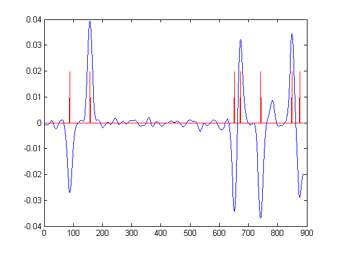
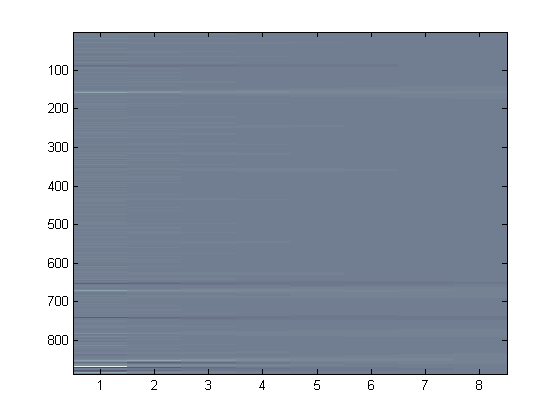
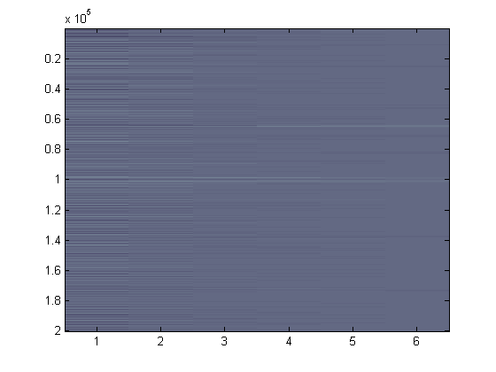
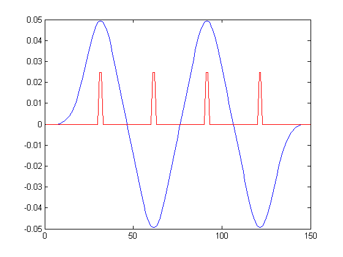

Introduction
Edge detection is an important task in many data processing procedures. Edge detection serves as an early step in many computer vision applications; the results of an edge detection algorithm may feed into higher-level processing. For example, edges in images may demarcate the boundaries of real world objects appearing in the image. In other data processing tasks, edges may indicate a transition between states or the occurence of interesting events.
We describe an application in MATLAB that detects edges in 1D data. We begin with the application of edge detection in two scientific data sets. We follow with a discussion of edge detection theory and provide some examples of edge detection with sythetic data.
Application
Our MATLAB application consists of one main script, two utility scripts, and several supporting modules:
- AnalyzeEdges
- The core of the application, performs scale space edge detection on 1D data; call this module if you already have your data loaded into a vector
- AnalyzeFretData
- A utility script, loads an itx file containing FRET data, computes the FRET ratio, and performs 1D data analysis
- Analyze3dfmDna
- A utility script, loads 3DFM position data from a file and performs 1D data analysis
We will discuss how to use these modules using several concrete examples.
Example Data
Edge Detector 1D comes with sample FRET data (based on real data, but with extra noise). The following MATLAB commands load and analyze this data using the core AnayzeEdges function.
>> load sample-fret; >> [dFret, minmax, stats] = AnalyzeEdges(fret); Time Mean Stdv 188 1.67 0.15 256 1.09 0.12 751 1.87 0.14 772 1.09 0.23 841 1.76 0.14 900 1.07 0.15
After loading the sample data, a variabled named 'fret' will be added to the MATLAB workspace. In this example, the only parameter provided to AnalyzeEdges is the data set; the program happens to choose reasonable default parameters for this sample data. Type 'help AnalyzeEdges' for more information about the other optional parameters.
Three display windows will appear showing the edges detected in the data and some intermediate analysis results. Five edges are found, which divide the sample data into six regions; the ending index, mean, and standard deviation of each region are printed to the MATLAB console.
FRET
Consider an experiment in Fluorescence Resonance Energy Transfer (FRET). Two fluorescing particles are bound to two regions of a molecule that undergoes shape transformations. The emission spectrum of one particle (the donor) matches the absorption spectrum of the other particle (the acceptor). When the donor is excited (e.g. with laser light), both particles emit energy at their respective emission spectra. But, the amount of light emitted by the donor particle and absorbed by the acceptor particle changes as a function of distance (with a 1/r6 depencency). So, the ratio of light emitted by the two particles provides a measure of the structure of the molecule to which they are attached. When the molecule undergoes a structural change, one sees a discontinuity in the FRET measurement.
A scale space edge detection is required to analyze the FRET data correctly. Edge detection at a fine scale would detect many false transition regions due to noise; coarse scale detection would be imprecise. The following code example demonstrates how one might use our MATLAB program to detect distinct regions in this data.
>> [fret, dFret, minmax, stats] = AnalyzeFretData('cascade3trace276.itx', [1:8], 0.4*ones(1,8), .01, 1.5, 10.36, 4);
Time Mean Stdv
2.37 0.66 0.06
3.06 0.10 0.04
8.01 0.87 0.06
8.21 0.07 0.03
8.91 0.78 0.05
9.98 0.14 0.10
10.25 0.90 1.38
10.36 0.40 0.62
Briefly, the parameters provided specify:
- The name of the data file containing the FRET data
- The scales (in data points) over which to perform the analysis
- A set of thresholds to apply at each scale; the threshold value between 0 and 1 specifies how sensitive the algorithm is to detecting edges
- The amount of time between data samples
- The time at which to start analysis
- The time at which to end analysis
- The number of data points on each side of a transition to exclude from the statistics
{kind=link}

{kind=link}

{kind=link}
Figures created by the edge detection application. Top: FRET data with edges detected in red. Middle: coarsest level derivative of Gaussian data used to seed the search for edges in the FRET data, with final edge positions marked in red. Bottom: The derivative of Gaussian scale space used in the edge search.
The selection of scales, therefore, is crucial in this analysis. If the scales considered are too fine, false edges due to noise will be detected. If the scales considered are too coarse, significant features may be missed. Finding the right happy medium is known as parameter tuning.
Paired with scale selection is the selection of appropriate thresholds, which we discuss in the next section.
The application calculates and prints region statistics (mean and standard deviation). The first region lies between the start time and the first detected edge; the second region lies between the first and second detected edge, etc. The application returns this data in a MATLAB matrix, along with the scaled derivatives of the data and a vector indicating where the detected edges occur.3DFM
The 3DFM provides researchers the ability apply magnetic forces to small particles. In one experiment, researchers have attached a magnetic bead to one end of a coiled DNA strand while the other end remains fixed. As the scientist pull one end of the DNA, the DNA unravels and histones (around which the DNA is coiled) pop off the DNA strand. By tracking the magnetic bead one can determine where the histones pop off by identifying jumps in the position measurement. The challenge of this analysis, however, is that the position data are very noisy; additionally, the position is sampled 10,000 times per second, generating a vast amount of data.
The following code snipet shows one attempt at detecting the edges in the 3DFM position data. (The data are actually culled in this example to limit the amount processed.)
>> [dData, minmax, stats] = Analyze3dfmDna('csvData', [16, 32, 64, 128, 256, 512], [0.2, 0.2, 0.2, 0.2, 0.2, 0.17], .0001);
Time Mean Stdv
1.66 0.81 0.01
10.87 0.86 0.01
21.57 0.89 0.02
25.11 0.92 0.01
32.74 0.93 0.02
50.43 0.97 0.02
52.54 1.01 0.01
59.63 1.03 0.02
64.46 1.06 0.02
71.11 1.34 0.02
77.06 1.36 0.02
82.20 1.38 0.01
87.78 1.39 0.03
98.69 1.45 0.02
100.81 1.59 0.04
113.16 1.88 0.03
116.41 1.97 0.01
128.79 1.99 0.02
137.53 2.09 0.02
155.93 2.14 0.02
173.07 2.20 0.02
200.00 2.27 0.02
{kind=link}

{kind=link}
Top: The results of edge detection on 3DFM data; about 200000 sample points are represented. Bottom: The derivative of Gaussian scale space used in edge detection (scales: 16, 32, 64, 128, 256, 512).

Edge detection with a high threshold, initially 0.7.
Download
You can find the latest version of Edge Detector 1D here.
Theory
In 1986, John Canny published a seminal paper on edge detection. Canny provides a mathematical argument for why a derivative of Gaussian kernel is an optimal edge detector. Convolving an edge with a derivative of Gaussian kernel produces maxima (or minima) at step edges. The concept can be applied to 1D data as well as 2D data (e.g. images), or even data of higher dimensions.


{kind=link}
Top: A series of ideal step edges. Bottom: The result of convolving the ideal step edge with an appropriate derivative of Gaussian kernel. Detected minima and maxima of the result are marked in red.
{kind=link}
The results of edge detection on a noisy step edge signal. The added noise had a standard normal distribution scaled to 20% of the amplitude of the original signal.
{kind=link}
The Gaussian derivative scale space of the noisy step edge function (scales: 1, 2, 4, 8). High intensities represent a larger response to the derivative kernel, indicating a positive step edge. Low intensities indicate a negative step edge.
References
- Canny, J. 1986. A computational approach to edge detection. IEEE Trans. Pattern Anal. Mach. Intell. 8, 6 (Nov. 1986), 679-698.